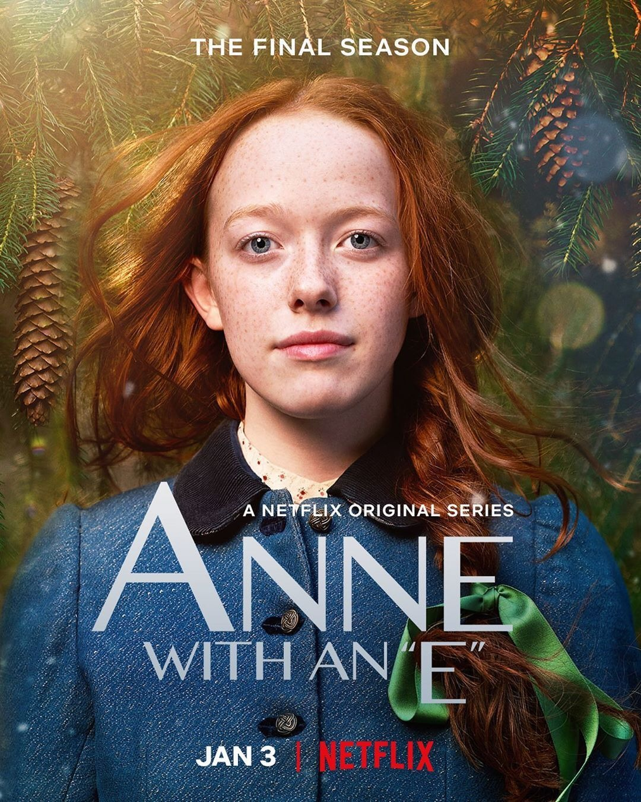

Prison Break

Prison Break, ABD yapımı bir aksiyon dizisi. Hikâyesi Paul Scheuring tarafından ortaya atılmış ve FOX şirketi tarafından 2005 yılında dizi olarak hayatına adım atmıştır.
Merhaba, ben Gökçe Yılmaz. Konya Teknik Üniversitesi Bilgisayar Mühendisliği 4.sınıf öğrencisiyim. Kod yazmayı, dizi izlemeyi, kitap okumayı severim.
Prison Break
Prison Break, ABD yapımı bir aksiyon dizisi. Hikâyesi Paul Scheuring tarafından ortaya atılmış ve FOX şirketi tarafından 2005 yılında dizi olarak hayatına adım atmıştır.
Anne With An E
Anne with an E, Lucy Maud Montgomery'nin klasik çocuk edebiyatı Anne Green of Green Gables'dan uyarlanan Kanadalı bir dizi televizyon dizisidir.